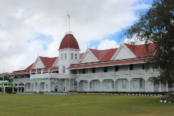
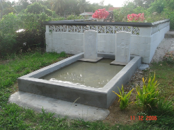
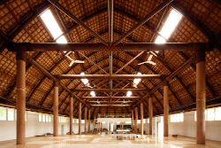
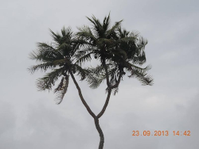
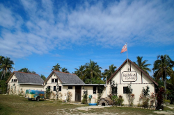
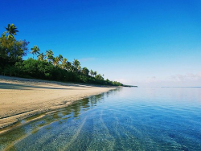
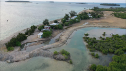
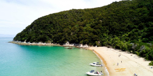
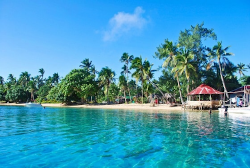

Escritorio Virtual
Inicio
Sobre mi
Noticias
Agenda
Meteorología
Viajes
Juegos
Viajes
Carrusel de imágenes
>
<
Tipo de cambio
Tasa de cambio obtenida: 1 EUR = 2.5297 TOP
Mapa dinámico
© Mapbox
© OpenStreetMap
Improve this map
Localización encontrada
×
© Mapbox
© OpenStreetMap
Improve this map
© Mapbox
© OpenStreetMap
Improve this map
Ruta por Nuku'Alofa
×
Visita Playa Ha'atafu
×
Visita a las islas
×
Cargar mapa estático
Cargar mapa dinámico
Subir archivos KML
Seleccionar archivos KML a cargar:
Subir archivo XML
Seleccionar archivos XML a cargar:
Ruta por Nuku'Alofa
Tipo: Senderismo
Medio: A pie
Fecha: 2023-12-15
Hora: 12:00:00
Tiempo: 6 horas
Agencia: RutasTonga
Descripcion: Se visitarán los lugares más destacados de la capital de la isla
Personas: Se puede ir con niños
Lugar: Palacio Real de Tonga
Direccion: VQ9X+FQ2, Vuna Rd, Nuku'alofa, Tonga
Coordenadas: -21.13117063262022, -175.2005886457105, 4
Referencias:
https://es.wikipedia.org/wiki/Nukualofa
https://es.wikipedia.org/wiki/Palacio_Real_de_Tonga
https://www.royalpalace.to/
Recomendación: 7
Hitos:
Palacio Real de Tonga
Descripcion: Residencia de Tupou VI, Rey de Tonga
Coordenadas: -21.13117063262022, -175.2005886457105, 4
Distancia del último punto: 0 m
Galería de fotos:

Telekava European Cemetery
Descripcion: Cementerio a los caidos en la Segunda Guerra Mundial
Coordenadas: -21.13421725022125, -175.20945121535524, 7
Distancia del último punto: 963.99 m
Galería de fotos:

Tonga National Museum
Descripcion: Museo nacional de Tonga
Coordenadas: -21.13844583593113, -175.20396822904885, 7
Distancia del último punto: 733.22 m
Galería de fotos:

Visita Playa Ha'atafu
Tipo: Paisajística
Medio: En bici
Fecha: 2023-12-13
Hora: 10:00:00
Tiempo: 16 horas
Agencia: Sin agencia
Descripcion: Un viaje en bici para visitar la playa de Ha'atafu, con la posibilidad de bañarse en ella
Personas: Personas en buena forma física
Lugar: ANT Bicycles Tonga
Direccion: Railway Rd, Nuku'alofa, Tonga
Coordenadas: -21.13718666160756, -175.20163424666714, 7
Referencias:
https://www.tripadvisor.es/Attraction_Review-g317040-d315301-Reviews-Ha_atafu_Beach-Tongatapu_Island.html
https://www.surfingtonga.com/index.html
https://www.lonelyplanet.es/oceania/tonga/imprescindible/playa-de-haatafu
Recomendación: 10
Hitos:
Coco de 3 cabezas
Descripcion: Una atracción turística muy visitada, un arbol de cocos con 3 cabezas
Coordenadas: -21.157854674108894, -175.27755641907672, 11
Distancia del último punto: 0 m
Galería de fotos:

Heilala Holiday Lodge
Descripcion: Resort vacacional de Heilala
Coordenadas: -21.07158149791907, -175.33522905520314, 14
Distancia del último punto: 733.22 m
Galería de fotos:

Playa de Ha'atafu
Descripcion: Playa protegida para nadar y hacer surf
Coordenadas: -21.06976568669056, -175.3349976690178, 6
Distancia del último punto: 963.99 m
Galería de fotos:

Visita a las islas
Tipo: Senderismo
Medio: A pie (con trayectos en barco entre las islas)
Fecha: 2023-12-19
Hora: 20:00:00
Tiempo: 20 horas
Agencia: Nukunukumotu Tours
Descripcion: Una visita guiada a algunas de las distintas islas que conforman Tonga
Personas: Se pueden llevar niños
Lugar: Palacio Real de Tonga
Direccion: VQ9X+FQ2, Vuna Rd, Nuku'alofa, Tonga
Coordenadas: -21.13117063262022, -175.2005886457105, 4
Referencias:
https://to.geoview.info/nukunukumotu_island,4032391
https://en.wikipedia.org/wiki/Pangaimotu_(Vava%CA%BBu)
https://mapcarta.com/20410440
Recomendación: 9
Hitos:
Isla de Nukunukumotu
Descripcion: Isla localizada a una corta distancia al este de Nukualofa
Coordenadas: -21.14200661114548, -175.1460399023326, 7
Distancia del último punto: 0 m
Galería de fotos:

Isla de Oneata
Descripcion: Isla localizada al norte de Nukunukumotu
Coordenadas: -21.129241417647656, -175.14618839323603, 7
Distancia del último punto: 1.46 km
Galería de fotos:

Isla de Pangaimotu
Descripcion: Isla localizada al noroeste de Oneata
Coordenadas: -21.124028934272, -175.1590628165866, 7
Distancia del último punto: 1.40 km
Galería de fotos:

Galería de videos:
Subir archivos SVG
Seleccionar archivos SVG a cargar:
Palacio Real de Tonga
Palacio Real de Tonga
Telekava European Cemetery
Tonga National Museum
Palacio Real de Tonga
ANT Bicycles Tonga
Coco de 3 cabezas
Heilala Holiday Lodge
Playa de Ha'atafu
ANT Bicycles Tonga
Palacio Real de Tonga
Isla de Nukunukumotu
Isla de Oneata
Isla de Pangaimotu
Palacio Real de Tonga